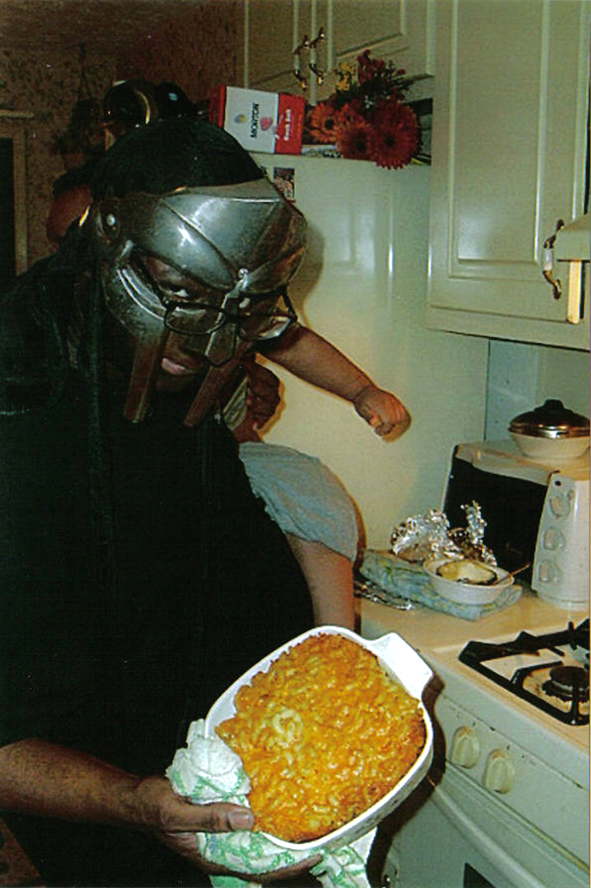

Mac & Cheese

Description
Quick, easy, and tasty macaroni and cheese dish. Fancy, designer mac and cheese often costs forty or fifty dollars to prepare when you have so many expensive cheeses, but they aren't always the best tasting. This simple recipe is cheap and tasty./p>
Ingredients
- 5 cups cooked macaroni (approx. 4 cups uncooked)
- 1 stick butter
- 1 cup bread crumbs
- 1/2 tsp salt
- 1/2 tsp pepper
- 1tbls sugar
- One minced fresh garlic clove
- 2 cups milk
- 1 8 oz package Colby/ Monterey Jack cheese
- 4 cups shredded cheddar cheese
Steps
- Cook the macaroni until done as usual.
- Add sugar and garlic to water. Do not overcook it.
- Drain macaroni in strainer.
- Place macaroni, butter, salt, pepper, milk, Colby/Jack cheese, and 3 cups of cheddar cheese in a pot boil slow add bread crumbs.
- Cover everything with aluminum foil and cook for 45 minutes at 350 degrees.
- Uncover and add extra cup of cheddar cheese across the top. Bake uncovered for another 15 minutes.